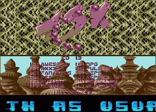
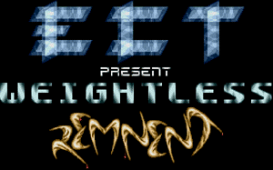
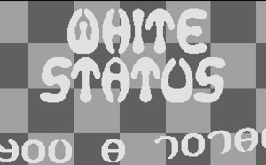
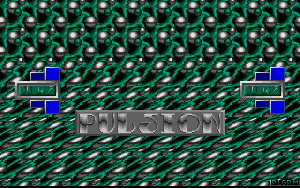
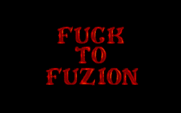
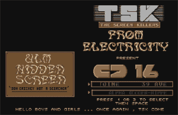

TSK CD 13 : une multitude de Démos/Dentros.
 Image
de la compile au format MSA [721 Ko] (zip)
Image
de la compile au format MSA [721 Ko] (zip)
Les compiles TSK (THE SCREEN KILLERS) sont des compiles de mini Dentro/Micro Demo de plusieurs groupes de démos ou de crackers comme Fuzion, Pulsion, Zuul, ICS, The Replicants, etc ...
TSK CD 13 : une multitude de Démos/Dentros.
 Image
de la compile au format MSA [721 Ko] (zip)
Image
de la compile au format MSA [721 Ko] (zip)
TSK CD 15 : une multitude de Démos/Dentros.
Image de la compile au format MSA [705 Ko] (zip)
|  |  |
|
On y trouve la démo du groupe ECT (1040 STF seulement) |
Avec
un ROTOZOOM temps réel de White Status.
|
|  |  |
|
On y trouve aussi 4 démos de Pulsion. |
Aussi
une démo de Factory, etc ...
|

TSK CD 17 : beaucoup de démos sur Atari STF.

[ Divers | Demos | Dentros | Mags | Trackers | Players | Utils ]